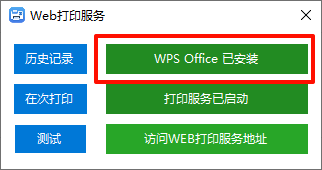

1、浏览器环境Edge浏览器：确定是版本是141.0.3537.99 或以上Microsoft Edge 官方下载地址谷歌浏览器：确定是版本是141.0.7390.123 或以上谷歌浏览器官方下载地址2、Net4.8环境NET4.8运行环境3、WPS版本如果这里显示为红色，可以点击进行跳转WPS下载地址WPS-支持多人在线协作编辑Word、Excel和PPT文档_WPS官方网站PS：或者使用我准备好的文件，里面包含Edge安装程序和Net4.8安装程序必要环境.zip